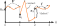
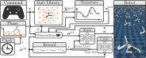
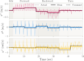

Motion retargeting approaches often prioritize kinematic similarity over whole-body dynamics, contact consistency, and actuation limits, yielding references that are difficult for reinforcement learning (RL) policies to reproduce, particularly for contact-rich behaviors. We present a contact-implicit, direct simulation-based multiple-shooting (DSMS) framework that transforms kinematically feasible references into dynamically feasible whole-body trajectories. By embedding a differentiable simulator within a nonlinear program, DSMS resolves contact, friction, impacts, self-collision, and joint limits internally while enforcing tracking, actuation, and task constraints without prescribing a contact schedule or introducing explicit contact constraints. Compared with existing retargeting methods, DSMS accelerates motion-imitation RL training and yields policies with high success rates and low tracking error. We further demonstrate zero-shot sim-to-real transfer on the Unitree G1 through command-conditioned contact-rich crawling and a highly dynamic 180-degree jump-turn.

The horizon is split into shooting intervals. Each interval is rolled out by the differentiable simulator, and defect constraints stitch the intervals together.
We transcribe trajectory optimization as a nonlinear program whose dynamics model is the discrete transition map of a differentiable simulator. Shooting-node states are decision variables, continuity is enforced through defect constraints, and each interval chains several fine substeps, so stiff contact dynamics are resolved accurately while the NLP stays small.
Importantly, contact is not modeled explicitly: there is no contact schedule, no complementarity relaxation, and no contact-force decision variables. Contact, friction, impacts, self-collision, and joint limits are all resolved inside the simulator, leaving the NLP free to enforce arbitrary constraints on states and commands. For highly dynamic motions such as backflips and rolls, we apply the same program in a receding-horizon fashion.
Whole-body feasible
Trajectories satisfy the full-order dynamics, friction, self-collision, and actuation limits.
Contact-implicit
No explicit contact constraints needed.
Arbitrary constraints
Equality and inequality path, boundary, and task constraints are supported.
Morphology-agnostic
Nothing is humanoid-specific — swapping the model retargets onto other robots.
Limit-cycle closure.

Learning architecture.
To synthesize command-conditioned periodic gaits, we solve the NLP over a single gait cycle with equality constraints that close the motion into a limit cycle: the planar base pose advances by the commanded displacement while the rest of the state returns to its initial value. Sweeping the commanded twist over a grid yields a library of dynamically feasible command–gait pairs from just a few short motion-capture clips.
A single RL policy tracks the library. An asymmetric actor–critic pairs a reference-free actor — seeing only proprioception, the commanded twist, and the gait phase — with a critic that also sees the gait reference, so the discrete library behaves like a continuous velocity-command interface.
Because each optimized reference is dynamically feasible by construction, the policies are trained on physically achievable imitation targets and transfer zero-shot to the Unitree G1 without any real-world fine-tuning.
A highly dynamic maneuver from a reduced-order model reference. A single rigid-body (SRB) trajectory is dynamically consistent only within a reduced representation: it captures the center-of-mass dynamics but says little about whole-body dynamics, contact, or actuation limits. DSMS takes such a partially dynamically feasible trajectory and resolves it into a whole-body feasible reference for the 180° jump-turn. A motion-imitation policy is then trained to track it.
Contact-rich locomotion steered in real time. Crawling is a prototypical contact-rich behavior that DSMS can resolve: it involves frequent contacts with the hands, elbows, knees, and feet, including sliding contacts, which methods that prescribe a contact schedule or a fixed mode sequence struggle to represent. Because contact is resolved inside the simulator, sticking and sliding are handled without any special treatment. The operator steers the robot through commanded twists while it crawls through a pathway.
Steering across the full command space. The operator drives the robot to crawl both forwards and backwards. Since the gait library is indexed by the commanded twist — forward and lateral velocity together with yaw rate — reversing and turning are served by the same set of DSMS-generated references.
Outdoors, on compliant and sloped ground. The same crawling policy carries over to an outdoor grass slope, where friction, compliance, and ground geometry all differ substantially from the training environment. The robot crawls uphill under real-time twist commands, with hands, elbows, knees, and feet repeatedly making and breaking contact on a deformable surface. Sim-to-real randomization covers contact friction, base pushes, center-of-mass offsets, and joint-encoder biases — but not ground compliance or slope.
A long, uninterrupted run through unstructured clutter. Rather than a staged obstacle course, the robot explores the lab as it actually is — a height-constrained space strewn with incidental objects that were never modeled, scanned, or randomized over during training. It sets off from a ramp, where the supporting surface is inclined and the hands and knees are loaded unevenly, then descends to the floor and negotiates whatever obstacles it meets there. Throughout, the operator supplies only twist commands: no waypoints, no contact schedule, and no environment-specific tuning. Playback is sped up 1.5×.

Commanded (dashed), instantaneous body-frame velocity (actual), and per-interval mean velocities as the crawling policy tracks forward, backward, and turning commands in one continuous run.
We sample piecewise-constant twist commands and hold each for three gait cycles. Although the instantaneous pelvis velocity oscillates strongly with gait phase — an inherent feature of crawling — the cycle-averaged velocities follow the commanded trends across all three components of the twist.
DSMS handles whole-body maneuvers that make and break contact across many body parts. In each clip, the blue ghost visualizes the dynamically infeasible reference.
A dynamically feasible flip from a reduced-order reference. Starting from a single rigid-body trajectory, DSMS recovers the whole-body motion — the crouch, the arm swing that supplies angular momentum, and the landing.
Multi-limb contact on landing. The reference lands across the arms, knees, and feet and contains artifacts such as knees clipping through the ground. DSMS resolves these into a physically consistent landing sequence while preserving the character of the motion.
Contact sweeping across the whole body. Rolling drags contact continuously over the shoulders, back, hips, and limbs — a sequence that would be impractical to schedule by hand, and which the simulator resolves internally.
The same formulation on a different morphology. Nothing in DSMS is humanoid-specific: swapping the model is enough to retarget a jumping turn onto a quadruped, with all four feet making and breaking contact through the maneuver.
If you find this work useful, please consider citing it as:
@article{esteban2026shooting,
title={Shooting for Contact: Contact-Implicit Multiple Shooting for Dynamic Motion Retargeting},
author={Sergio A. Esteban and Jason H. K. Siu and Derrick Mach and Junheng Li and Vince Kurtz and Joel W. Burdick and Aaron D. Ames},
journal={arXiv preprint arXiv:2608.03116},
year={2026}
}